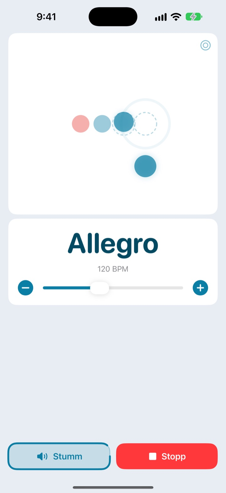
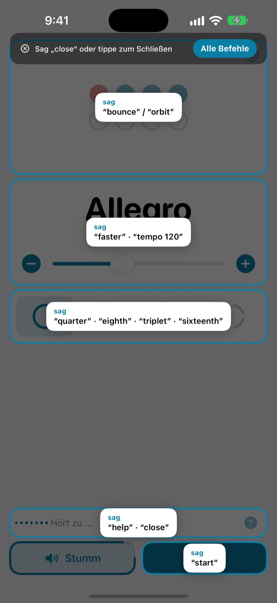
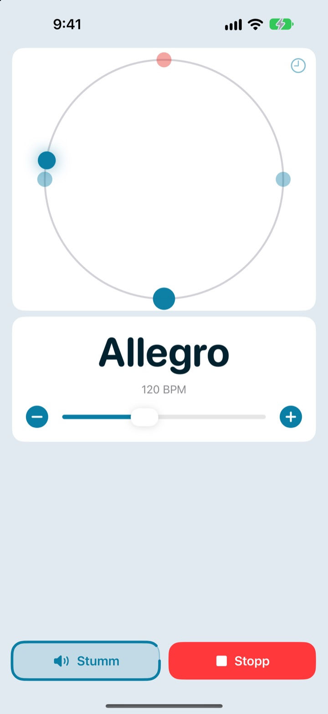
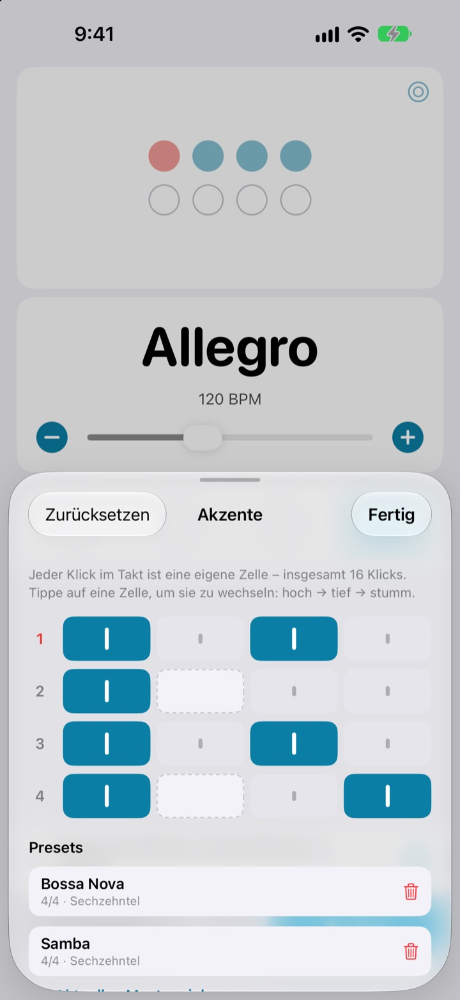

Hände am Instrument.
Tempo per Zuruf.
Sag mitten in der Phrase faster, und der Klick zieht an. Kein Griff zum Display, keine Pause, nur um das Tempo zu ändern. Die Befehle sind kurze englische Wörter.
Das komplette Metronom und die Sprachsteuerung sind gratis.

Probier es laut aus
Tippe auf einen Befehl oder schalte das Mikrofon ein und sprich ihn auf Englisch. Mach den Ton lauter, es klickt.
Schon mal den Groove verloren, nur um das Tempo anzupassen?
Bogen ablegen, Plektrum zwischen die Zähne, zweimal aufs Display tippen, und das Gefühl, das du gerade gefunden hattest, ist weg. Mit Not My Tempo änderst du das Tempo mit einem einzigen Wort, ohne deine Haltung aufzugeben.
Ein Wort, und der Klick folgt
Kurze englische Wörter wie start, faster oder tempo 120. Die App hört zu, sobald du sie öffnest. Du musst weder die iOS-Sprachsteuerung noch andere Bedienungshilfen einschalten.
Befehl vergessen? Sag help, und alle Befehle erscheinen auf dem Bildschirm.

Den Beat auch sehen
Wähl zwischen Ball, Orbit und Ring. Die Eins leuchtet rot und klickt lauter.
Tippst du auf dem Orbit im Takt mit, siehst du, wie genau du getroffen hast.

Akzente für jeden Song speichern
Stell jeden Klick im Takt auf hoch, tief oder stumm und sichere das Muster als Preset. Bossa Nova oder Samba baust du einmal und wählst sie danach nur noch aus. (Pro)

In drei Schritten startklar
- 1
App öffnen
Sie hört sofort zu.
- 2
Mikrofon erlauben
Beim ersten Start fragt sie einmal nach Mikrofon und Spracherkennung.
- 3
Sprechen oder tippen
Jeden Befehl gibt es auch als Bedienelement auf dem Bildschirm.
Das kannst du sagen
- start · stop
- abspielen, pausieren
- faster · slower
- 5 BPM schneller oder langsamer
- up · down
- 1 BPM schneller oder langsamer
- tempo 120
- direkt zu einem Tempo springen
- double · half
- doppelt so schnell, halb so schnell
- three beats
- Taktart wechseln
- quarter · eighth · triplet · sixteenth
- Unterteilung in Viertel, Achtel, Triolen, Sechzehntel
- louder · quieter · mute
- Klick lauter, leiser, stumm
- volume 60
- Lautstärke in Prozent einstellen
- bounce · orbit
- Beat-Ansicht wechseln
- timer 5 minutes
- Übungstimer stellen
- practice
- Tempo beim Üben schrittweise steigern (Pro)
- tune
- Stimmgerät öffnen (Pro)
- help
- alle Befehle anzeigen
- close · done
- Fenster schließen
Die Spracherkennung läuft auf Englisch (USA), deshalb sprichst du die Befehle auf Englisch, auch wenn dein iPhone auf Deutsch eingestellt ist. Jeder Befehl geht auch per Tippen.
Das Metronom ist gratis. Pro, wenn du mehr willst.
Gratis
- Alle Sprachbefehle
- Taktarten von 1 bis 8 Schlägen, mit betonter Eins
- Unterteilung in Viertel, Achtel, Triolen und Sechzehntel
- Drei Ansichten: Ball, Orbit und Ring
- Tap-Tempo und Timing-Check
- Übungstimer
Not My Tempo Pro
- Übungsmodus: alle paar Takte ein paar BPM mehr, bis du dein Zieltempo erreichst
- Akzent-Editor mit Presets pro Song
- Chromatisches Stimmgerät
Jahresabo mit kostenlosem Testzeitraum oder einmaliger Kauf auf Lebenszeit
Sprachsteuerung und Bedienungshilfen bleiben für alle gratis. Du hast die App schon vor Pro gekauft? Dann gehören dir alle Pro-Funktionen bereits.
Häufige Fragen
Kann ich Deutsch sprechen?
Die Spracherkennung läuft auf Englisch (USA), deshalb sind die Befehle kurze englische Wörter wie start oder faster. Die hast du schnell drauf, und jeder Befehl geht auch per Tippen. Der Rest der App ist auf Deutsch.
Die App hört mich nicht.
Prüf, ob beim Mikrofon „Hört zu“ steht. Falls nicht, tippe auf „Zuhören“. In lauten Räumen oder mit Lautsprechern helfen Kopfhörer, weil der Klick dann nicht ins Mikrofon gelangt.
Das Zuhören hat sich von selbst ausgeschaltet.
Um Akku zu sparen, schaltet sich das Zuhören nach ein paar Minuten ohne Befehl aus. Tippe auf „Zuhören“, um es wieder einzuschalten.
Das Tempo ist halb oder doppelt so schnell.
Sag double oder half, um es zu korrigieren.
Wie benutze ich das Stimmgerät?
Sag tune oder tippe auf die Wellenform-Taste auf der Tempo-Karte. Spiel einen Ton: Landet die Anzeige im grünen Bereich, bist du gestimmt. Mit close schließt du es wieder.
Ich nutze schon die iOS-Sprachsteuerung.
Schalte das Mikrofon der App aus und steuere sie über die Namen der Tasten. Alle Bedienelemente haben VoiceOver-Beschriftungen.
Wird meine Stimme irgendwohin geschickt?
Nein. Sprache wird direkt auf deinem Gerät erkannt und weder aufgenommen noch gespeichert oder hochgeladen. Metronom, Sprachsteuerung und Stimmgerät funktionieren auch ohne Internet.
Wie kündige ich das Abo?
Unter Einstellungen > Apple Account > Abonnements. Das Jahresabo verlängert sich automatisch, wenn du nicht spätestens 24 Stunden vor Ende des Zeitraums kündigst. Der Kauf auf Lebenszeit wird nur einmal berechnet.
Fragen oder Feedback? Schreib an leeo@kakao.com.